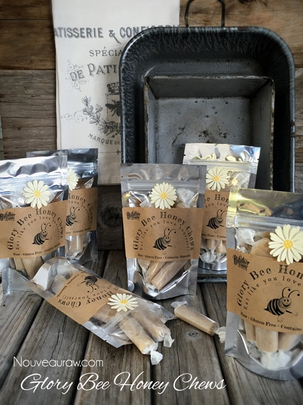

Glory Bee Honey Chews

~ raw, gluten-free ~
The inspiration for this recipe was to re-create the flavor of a childhood candy, Bit o’ Honey. Texturally, I knew that I couldn’t get close. Those candies were tough… I mean the kind of tough where you bite down, and it creates a hermetic seal between your top and bottom molars, tugging at your fillings, and sometimes pulling them out.
Ask Bob (cough). I once created a care package for him that included Bit o’ Honey candies, many years ago. Long story short… one of those candies literally pulled a filling out. Oy-vey! Some care package, huh?! hehe
The original Bit o’ Honey candy is made from corn syrup, sugar, nonfat milk, hydrogenated coconut oil, almonds, honey, salt, egg whites, canola and/or safflower and/or palm oil, modified soy protein, natural flavor, TBHQ, and Citric acid. I decided not to use 96.2% of what they did and the end result… well, these don’t taste like the original Bit o’ Honey’s…. but that doesn’t mean that they aren’t good!
The candies that I created are chewy, but won’t suck out any fillings! They are honey-sweet and leave a good aftertaste in your mouth. One thing that I have learned is that different kinds of raw honey will give the recipe a slightly different flavor and texture. We love to use local raw honey and always pick up random jars at the Farmers Market. So we get sticky-sweet exposure to many different flavors. As long as you enjoy what is in the jar from your pantry… You will enjoy this recipe.
For the almond flour, I used a fine almond flour, not ground almonds. You can achieve a raw fine almond flour by soaking, removing the skins, and dehydrating almonds. After dehydrating them and grinding them to a fine flour texture. If you don’t skin the almonds, the candies will have brown flecks in them. And if you use ground almonds, not only will you have brown flecks, but they will also be grainy. If you are not able to do this and 100% raw isn’t your top priority, you can purchase almond flour.
One last important thing that I wanted to point out is using raw honey. It has an entirely different texture, not to mention health benefits, than the golden-amber, liquid store-bought stuff. Raw honey is super thick, sticky, but ooooh so yummy and much better for you. So don’t skip on this ingredient. I hope you enjoy this recipe, and I would love to hear from you.
Preparation:
Batter:
- Place the almond flour, honey, and salt in the food processor fitted with the “S” blade. Process until it turns into a creamy paste.
Fill the piping bag:
- It is best to use either a canvas or a silicone piping bag. I used the piping tip Ateco #808.
- While holding the bag with one hand, fold down the top with the other hand to form a cuff over your hand.
- Fill the bag 1/2 full. If you overfill the bag, the excess batter may squeeze out the wrong end, not to mention that you will have less control of the bag when piping.
- Close the bag by unfolding the cuff and twisting the bag closed. This forces the batter down into the bag.
- “Burping” the bag: Make sure you release any air trapped in the bag by squeezing some of the batter out of the tip into the bowl. This is called “burping” the bag.
- If you don’t remove the air bubbles they will come out while you are piping your straight line and cause burps and breaks. Best to create a seamless line.
Piping:
- Hold the piping bag tip about 1/4″ above the non-stick sheet, at a 22.5-degree angle, and slowly pipe the batter from one edge of the dehydrator tray to the other.
- Keep constant pressure on the piping bag as you squeeze out the paste. This will ensure an even thickness of the line.
- After each completed line, stop and retwist the piping bag, working all the paste towards the tip. This will eliminate air bubbles in the bag and give you a solid grip.
- Remember: It doesn’t have to be perfect. Just have fun and if you make a mistake, scoop it up, place it back in the bag, and do it again.
Dehydrate & store:
- Place the tray in the dehydrator and dry at 145 degrees (F) for 1 hour, then reduce to 115 degrees (F) for 24 hours.
- Once cooled, cut into 2” lengths and wrap in squares of wax paper.
- I keep mine stored in the fridge for freshness, but they can be left out at room temp.
- These candy chews won’t be hard or crunchy.
 Culinary Explanations:
Culinary Explanations:
- Why do I start the dehydrator at 145 degrees (F)? Click (here) to learn the reason behind this.
- When working with fresh ingredients, it is important to taste test as you build a recipe. Learn why (here).

Now that we know what they look like… let’s make them. :)
© AmieSue.com